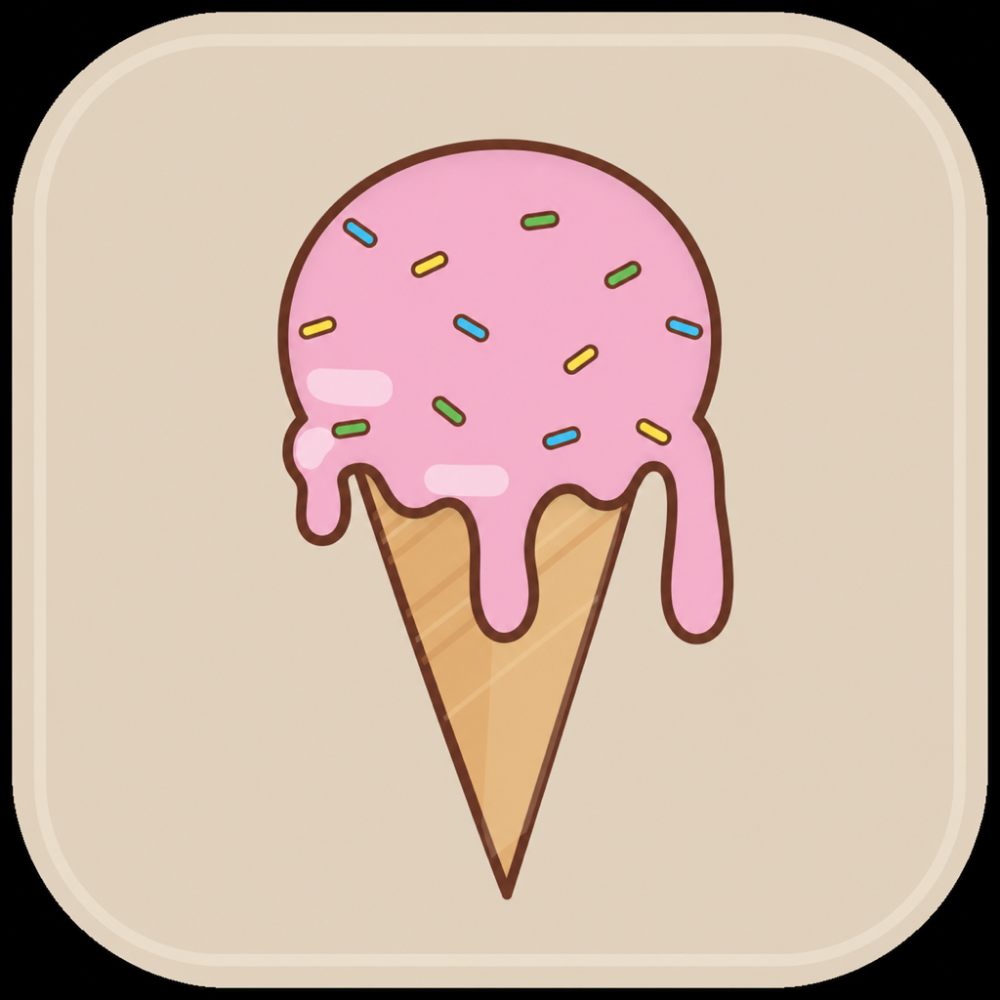
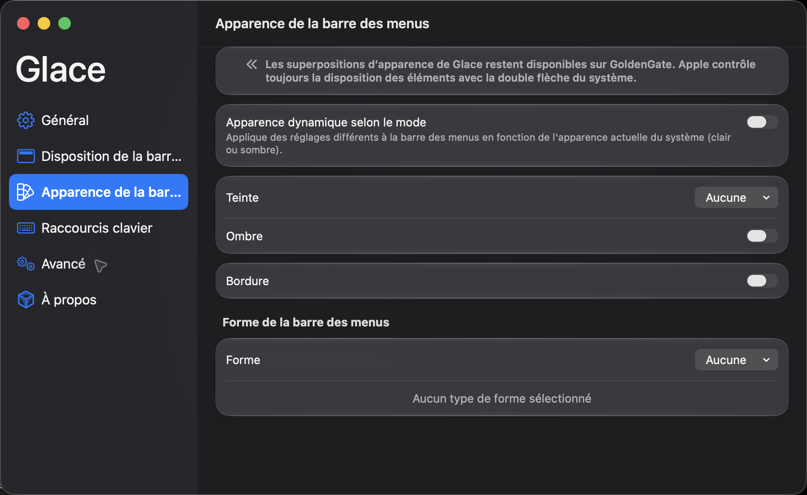
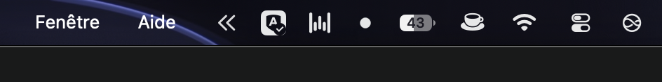

Find menu bar items
Review detected items without waiting on an endless loading state.

Glace Download Glace 2.0Hide distractions, find menu bar items fast, and keep control on Tahoe and GoldenGate.
Requires macOS 14 or later. Native support for macOS 26 Tahoe and macOS 27 GoldenGate.
Glace keeps useful controls close without pretending macOS works the same on every release.
Review detected items without waiting on an endless loading state.
Hide, reveal, search and arrange items with Glace’s proven tools on macOS 26.
Detect system-managed items and open the right native menu instead of running broken legacy animations.

Tahoe keeps Glace’s classic hide and reveal controls. GoldenGate uses Apple’s system-managed double arrow, so Glace switches to item detection and a native context menu.
Classic Glace sections, search, reveal actions and menu bar appearance tools.
Apple controls placement. Glace adds reliable detection, appearance overlays and native actions.

Download the signed and notarized Glace 2.0 release for macOS.